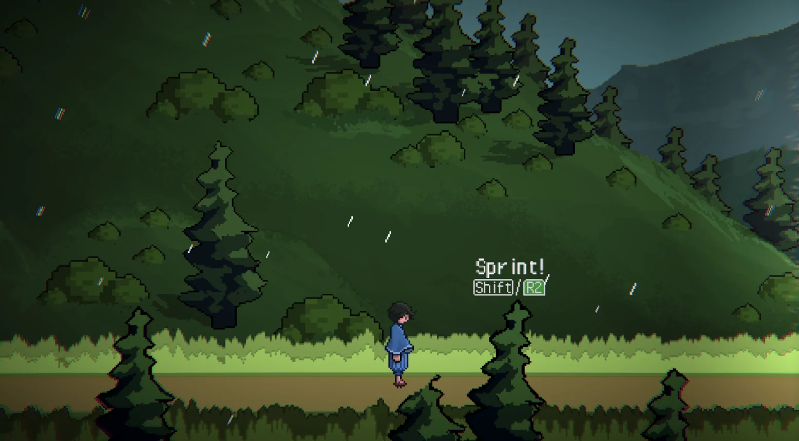
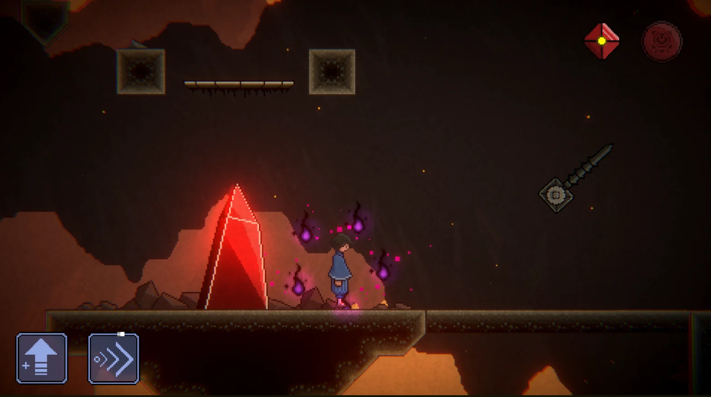
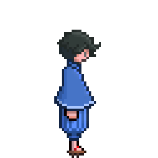
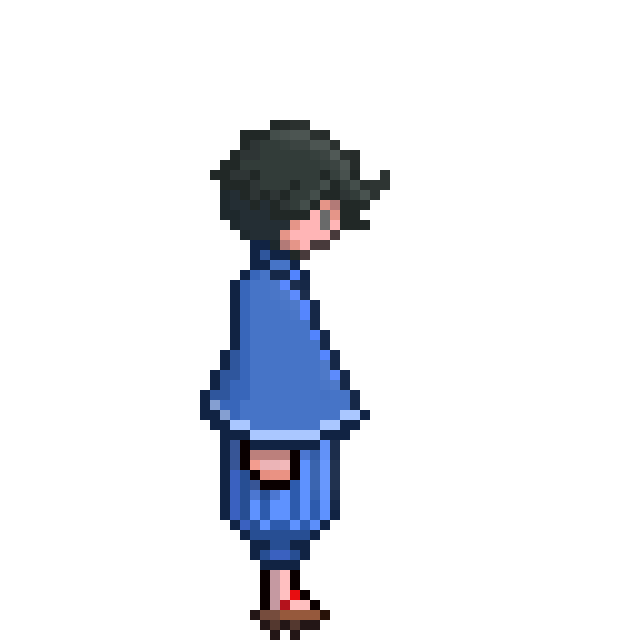
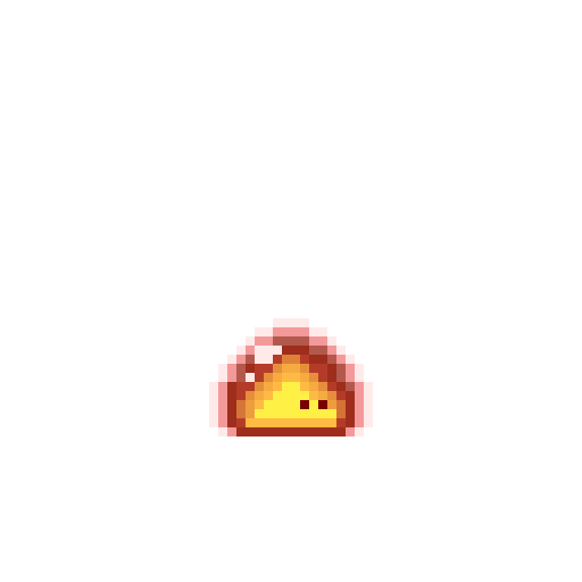
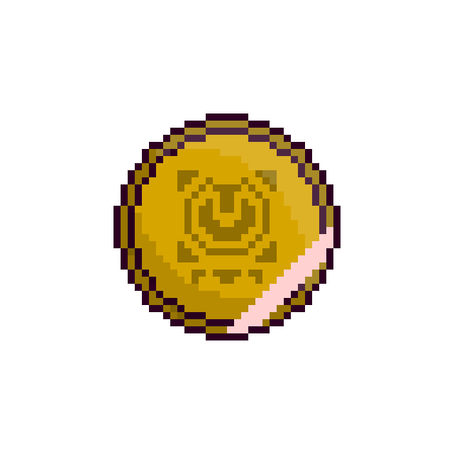
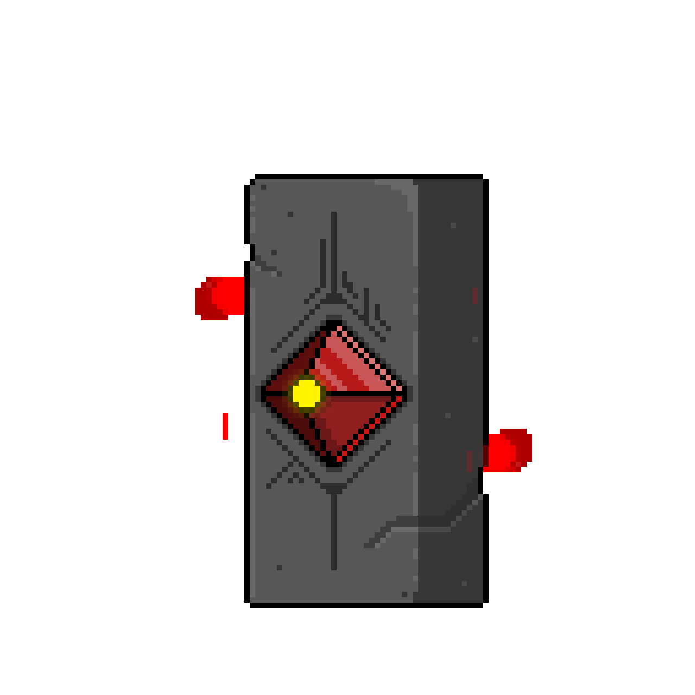
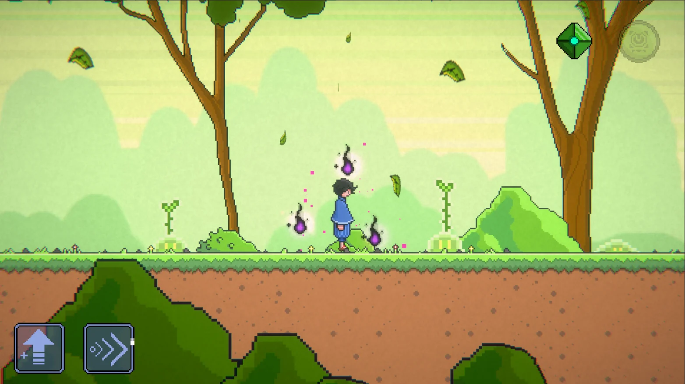
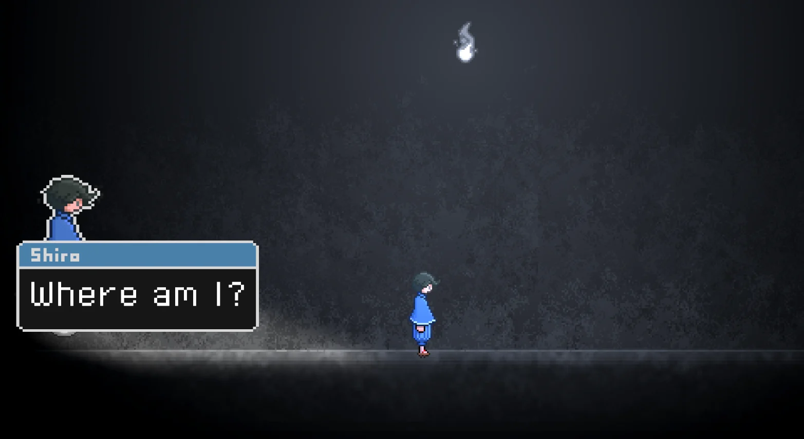

1ST SEMESTER PROJECT
LOST
LITTLE BOY.
A 2D pixel art platformer about crossing elemental worlds to recover the artifacts demanded by a mysterious captor.
WHERE IT STARTED
My first complete game.
Lost Little Boy was my first semester project and my introduction to building a complete playable game. Over six months I worked across pixel art, animation, level design, UI and implementation in Unity.
After his partner is abducted, the protagonist learns that his bloodline allows him to enter elemental worlds. To bring her back, he must travel through them and recover the artifacts his captor demands.
Licensed audio from Epidemic Sound and WeLoveIndies. External technical helpers and third party resources are credited on the release page.
A SMALL JOURNEY
Different worlds, one visual language.


PIXEL ART & ANIMATION
Built one frame at a time.
Characters, environmental art and animation were created to support a readable platforming experience while giving each world a distinct mood.







PLAY THE GAME
See where the journey started.
LET'S WORK TOGETHER
Have a world
to build?
Contact details and professional profiles will be connected here before launch.